アニメーションの試作（ChatGPT の絵があるモーション）
ChatGPT が描いたキーのコマ（そろえた版と同じ大きさ）の間を、同じモーション・同じ向きの一番近いキーの絵だけを使って埋めたもの。ランダムに10個。
枠の色：赤＝ChatGPT の絵／青＝前後の絵を関節に合わせて少し曲げた／緑＝動きが大きくて曲げられないので前後の絵をそのまま／金＝別のモーションの同じ姿勢の絵。
左の動く絵はゲームの半分の速さ。作り直し：
枠の色：赤＝ChatGPT の絵／青＝前後の絵を関節に合わせて少し曲げた／緑＝動きが大きくて曲げられないので前後の絵をそのまま／金＝別のモーションの同じ姿勢の絵。
左の動く絵はゲームの半分の速さ。作り直し：
tools/assemble/animate.pyhealer / healer_buff / down_right 12コマ・ChatGPT の絵 4枚
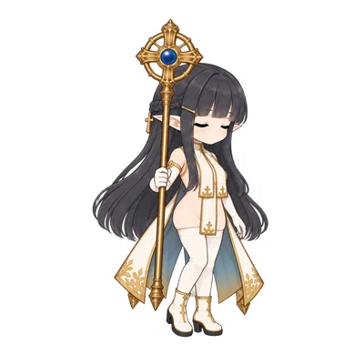


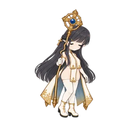
aria / swing_abandon / down_right 7コマ・ChatGPT の絵 4枚
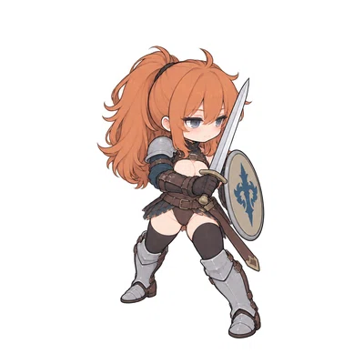

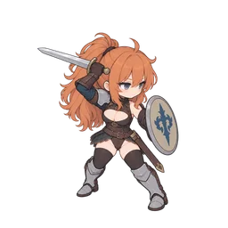
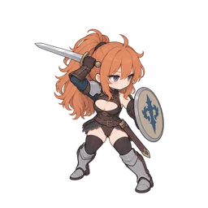


mage / mage_barrier / up_right 10コマ・ChatGPT の絵 3枚
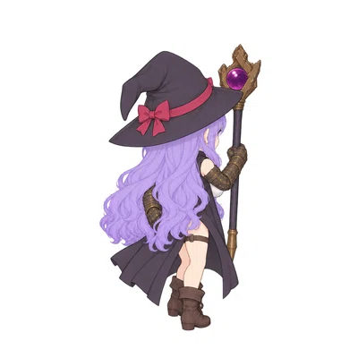

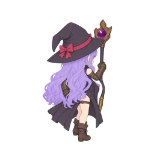

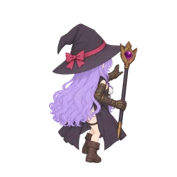

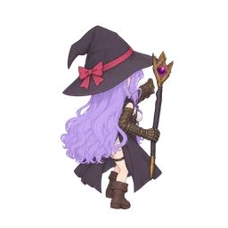
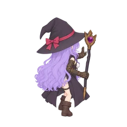
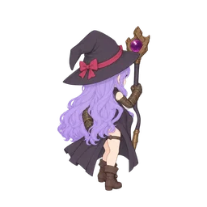

aria / heavy / back 11コマ・ChatGPT の絵 6枚
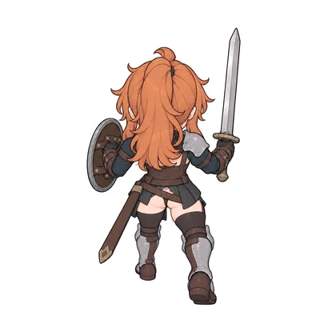

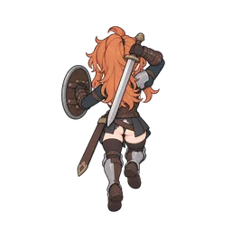


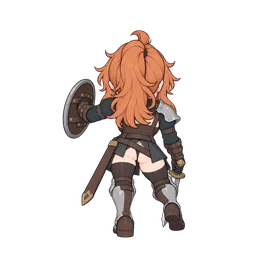

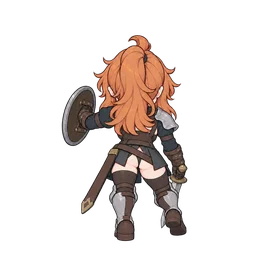
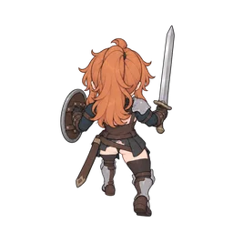
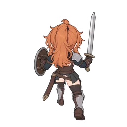
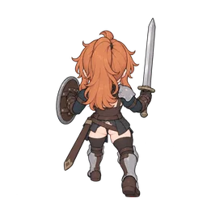
aria / kesa / right 12コマ・ChatGPT の絵 5枚
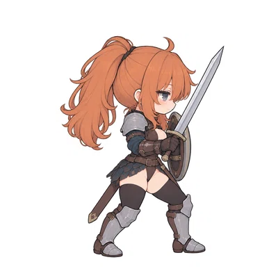


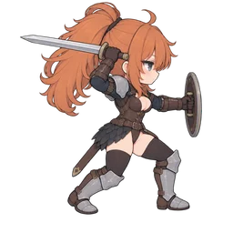

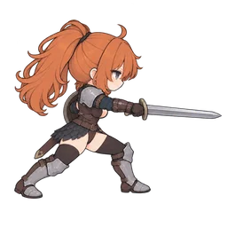

scout / ankle_grabbed / right 17コマ・ChatGPT の絵 4枚
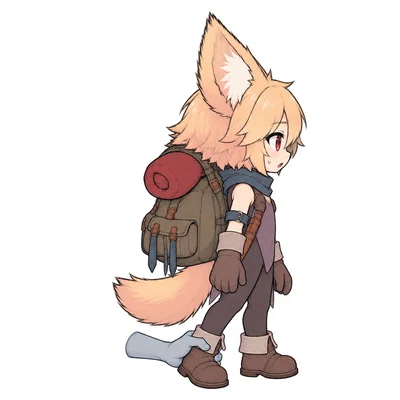
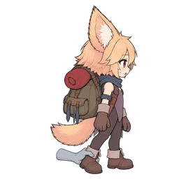
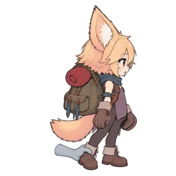
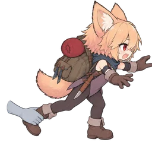
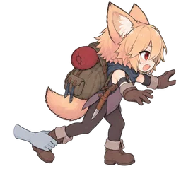

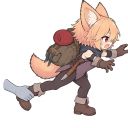

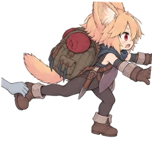
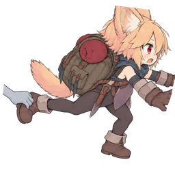
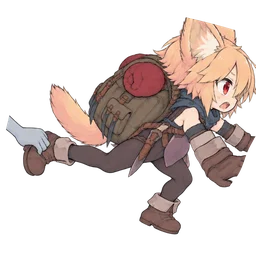
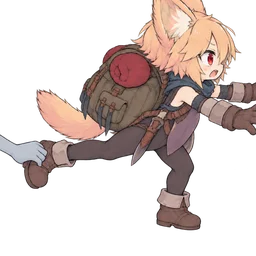
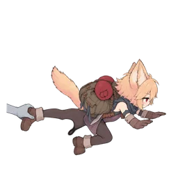
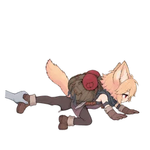
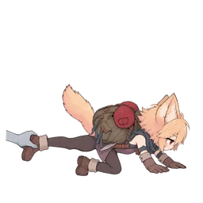
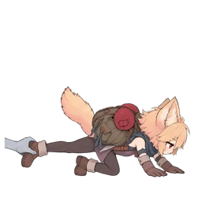
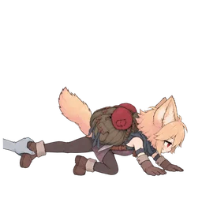
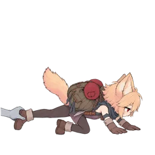
aria / yoko / down_right 12コマ・ChatGPT の絵 5枚


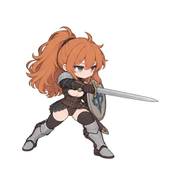

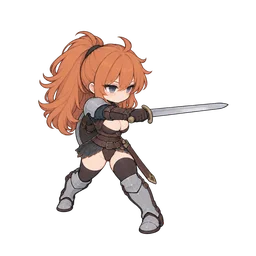
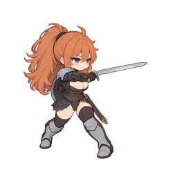
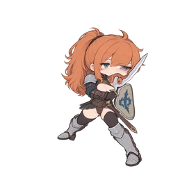

scout / scout_sidestep / back 8コマ・ChatGPT の絵 3枚
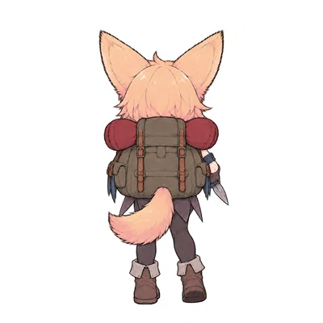
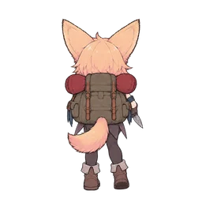
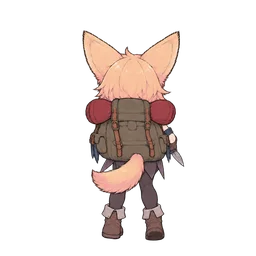
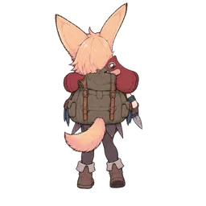

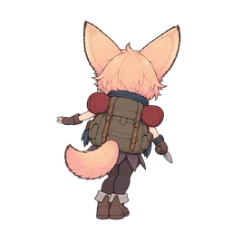
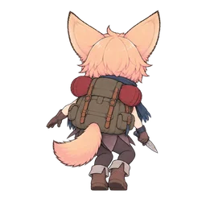
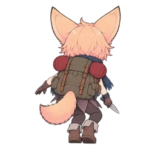
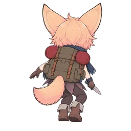
scout / shiver_hug / front 8コマ・ChatGPT の絵 4枚
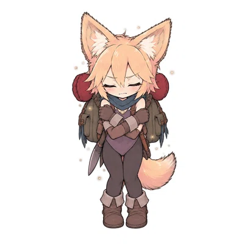


aria / heavy / left 11コマ・ChatGPT の絵 6枚